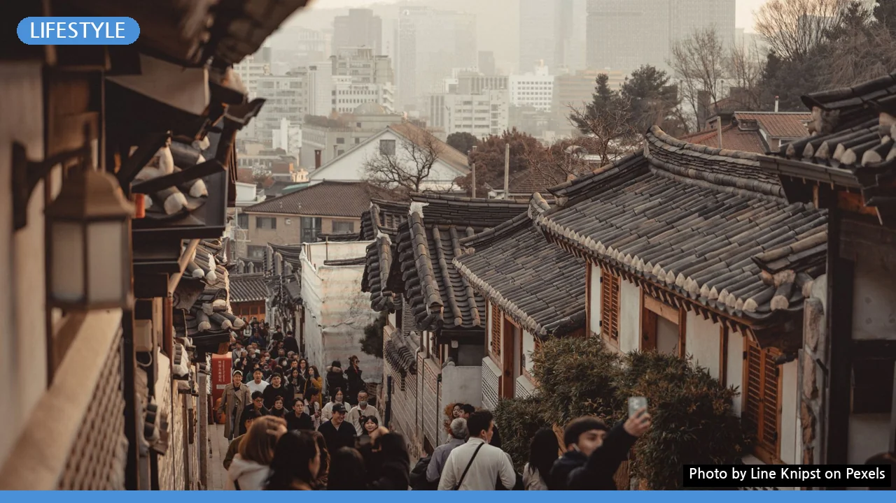
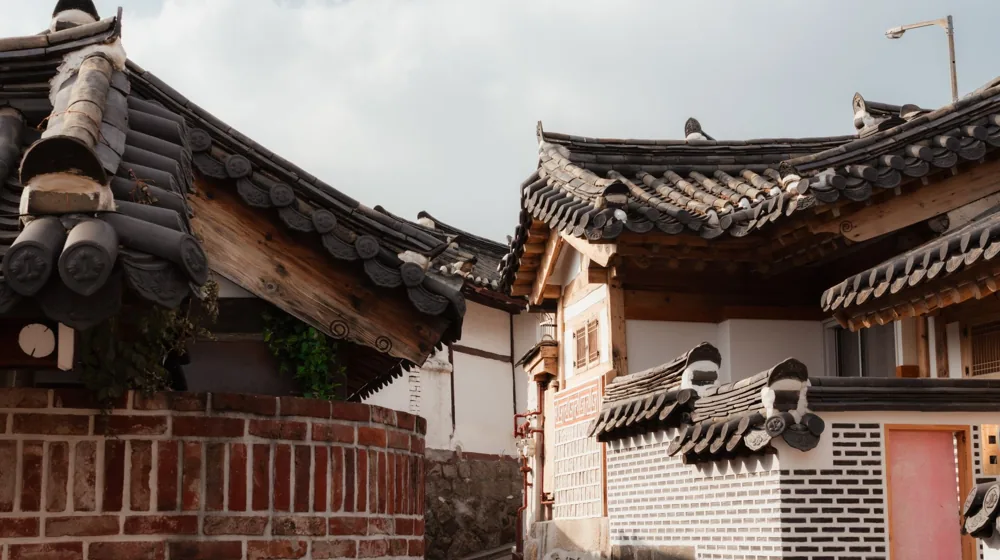

종택 숙박, 후회 없는 선택을 위한 5가지 체크리스트
사진: Line Knipst / Pexels (무료 이미지, 출처 표기)
종택 숙박, 어떤 매력을 기대할 수 있나요?

일상에서 벗어나 고즈넉한 한국의 멋을 느끼고 싶다면, 종택(宗宅) 숙박은 특별한 경험을 제공합니다. 종택은 한 가문의 종손이 대대로 살아온 전통 가옥으로, 단순한 한옥을 넘어 역사와 문화가 살아 숨 쉬는 공간입니다. 이곳에서는 시간이 멈춘 듯한 평온함 속에서 전통 건축의 아름다움과 선조들의 삶의 지혜를 직접 느낄 수 있습니다.
특히 현대적인 편의시설과 전통미가 조화롭게 어우러진 곳이 많아, 불편함 없이 이색적인 하룻밤을 보낼 수 있습니다. 고요한 마당을 거닐거나, 온돌방에서 따뜻하게 잠들고, 정갈한 한식 조식을 맛보는 등 오직 종택에서만 경험할 수 있는 특별한 순간들을 기대할 수 있습니다.
나에게 맞는 종택, 이렇게 찾아보세요: 유형별 특징 비교
다양한 종택 중 나에게 맞는 곳을 선택하려면 몇 가지 기준을 고려해야 합니다. 어떤 경험을 원하는지에 따라 최적의 종택이 달라질 수 있습니다. 아래 표를 통해 주요 특징들을 비교해보고, 본인의 여행 스타일에 맞는 종택을 찾아보세요.
이외에도 종택별로 온돌방만 있는지, 침대방도 있는지, 개별 화장실 여부 등 세부 시설을 미리 확인하는 것이 중요합니다. 2026년 9월 기준으로, 종택 정보는 한국관광공사의 '고택·종가 문화 활용 사업' 관련 사이트나 각 지자체 관광 홈페이지에서 상세하게 확인할 수 있습니다.
종택 숙박 시 꼭 지켜야 할 에티켓과 주의사항
종택은 단순한 숙박 시설이 아닌, 실제 가문의 역사가 담긴 소중한 문화유산입니다. 따라서 머무는 동안 특별한 에티켓과 주의사항을 지키는 것이 중요합니다.
- 정숙 유지: 전통 한옥은 현대 건축물에 비해 방음이 취약할 수 있습니다. 늦은 밤 과도한 대화나 소음은 다른 투숙객과 주인 가문에 불편을 줄 수 있으니 주의합니다. 특히 마당이나 공용 공간에서는 더욱 조용히 행동하는 것이 좋습니다.
- 시설물 아껴 쓰기: 고택의 가구, 기물, 건축물은 오랜 역사를 지닌 귀중한 자산입니다. 파손되지 않도록 조심스럽게 사용하고, 절대 임의로 옮기거나 훼손해서는 안 됩니다.
- 금연 및 금주 규정 준수: 대부분의 종택은 화재 예방 및 전통문화 보존을 위해 건물 내 흡연 및 과도한 음주를 엄격히 금지합니다. 지정된 흡연 장소가 있다면 그곳을 이용하고, 음주는 소규모로 정숙하게 즐겨야 합니다.
- 주인과의 소통: 애완동물 동반, 외부 음식 반입, 추가 인원 등 특별한 요청 사항은 반드시 예약 시 또는 체크인 전에 주인에게 문의하여 허락을 받아야 합니다. 무단으로 진행할 경우 문제가 발생할 수 있습니다.
종택 숙박, 더 특별하게 즐기는 방법
종택에서의 하룻밤이 더욱 기억에 남으려면 주변 환경과 연계된 활동을 적극적으로 활용해보세요.
- 전통문화 체험 참여: 많은 종택에서 다도, 한복 체험, 전통 공예, 서예, 전통 음식 만들기 등 다양한 프로그램을 운영합니다. 숙박 전 미리 예약하여 참여하면 한국의 아름다운 문화를 깊이 이해할 수 있습니다.
- 주변 명소 탐방: 종택은 대개 유서 깊은 마을이나 자연경관이 수려한 곳에 위치합니다. 주변의 고택, 사찰, 박물관, 자연휴양림 등을 함께 방문하여 여행의 깊이를 더해보세요.
- 아침 산책과 고택의 흔적 찾기: 이른 아침, 종택의 고요한 마당을 거닐며 건축물 곳곳에 담긴 세월의 흔적과 이야기를 찾아보는 것도 좋은 방법입니다. 종손이나 주인에게 종택의 역사에 대해 물어보는 것도 특별한 기회가 될 수 있습니다.
- 지역 특산물로 차려진 조식: 대부분의 종택은 정갈하고 맛깔스러운 한식 조식을 제공합니다. 신선한 지역 식재료로 만든 건강한 아침 식사를 통해 종택의 정취를 온전히 느껴보세요.
예약부터 체크아웃까지, 실용적인 준비 체크리스트
성공적인 종택 숙박을 위한 마지막 단계는 철저한 준비입니다. 다음 체크리스트를 활용하여 불편함 없이 머무세요.
- 예약 전 확인 사항:
- 날짜별 잔여 객실 및 가격 (성수기/비수기 요금 변동 확인)
- 객실 내 편의시설 (에어컨, 냉장고, TV, 개별 화장실 등)
- 조식 포함 여부 및 식사 시간
- 주변 편의시설 (마트, 식당 등)과의 거리
- 환불 및 취소 규정
- 짐 꾸리기:
- 간편하고 편안한 복장 (특히 온돌방에서 편리)
- 개인 세면도구 (샴푸, 린스, 칫솔 등 없는 곳이 많음)
- 수건 (여분), 개인 컵, 상비약
- 읽을 책, 간단한 다과 등 조용한 시간을 위한 준비물
- 도착 및 숙박 중:
- 체크인 시간 준수 및 주인에게 도착 예상 시간 알리기
- 종택 이용 수칙 및 주의사항 다시 한번 확인
- 궁금한 점은 언제든지 주인에게 문의하기
- 체크아웃 시간 엄수 및 사용한 공간 깨끗하게 정리하기
종택 숙박은 단순한 잠자리가 아닌, 살아있는 역사와 문화를 체험하는 여정입니다. 꼼꼼한 준비와 세심한 배려로 잊지 못할 추억을 만들어보세요. 정확한 숙박 정보 및 예약은 해당 종택의 공식 홈페이지나 주요 예약 플랫폼을 통해 2026년 9월 기준으로 확인하시길 권장합니다.
🔗 이 글도 함께 보면 좋아요: 빌라 생활 장단점: 현명한 주거 선택을 위한 가이드